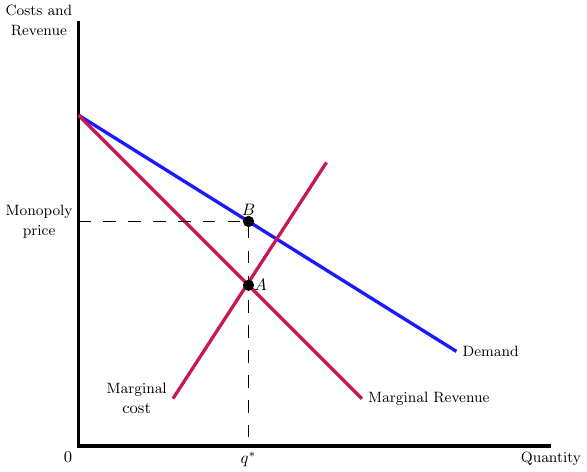

19 Brand Name Drugs
The landscape of prescription drug pricing is complicated, marked by a confusing array of prices at different stages of the supply chain. The term “price” itself is nebulous in the pharmaceutical context, given that it can refer to the price set by the manufacturer to the wholesaler, from the wholesaler to the pharmacy, and from the pharmacy to the insurer or directly to the patient. Complicating matters further are significant and opaque rebates that permeate throughout the supply chain, often negotiated behind closed doors and unbeknownst to the end consumer. This complex web of pricing structures contributes to the difficulty in understanding the true cost of brand name prescription drugs.
To distill the complexities of pharmaceutical pricing, it’s instructive to adopt an economics lens. Essentially, there are two broad categories in this domain: pricing for drugs with patent protection and pricing for generic drugs. In the former category, which will be the focus of this chapter, two primary economic models come into play. First, there is the unique, patent-protected drug with no close substitutes, effectively granting the manufacturer a monopoly in the market. Second, there are scenarios where multiple products enjoy patent protection but are imperfect substitutes for one another, falling under the model of Bertrand competition with differentiated products. These models offer a simplified yet insightful framework for understanding the economics of brand name drug pricing. See Berndt and Newhouse (2010) for a more detailed discussion of these models and their application to the pharmaceutical industry.
19.1 Monopoly Pricing
Several blockbuster drugs illustrate the monopoly pricing model effectively, given their unique therapeutic profiles and absence of close substitutes during their patent-protected periods. Lipitor, a cholesterol-lowering drug, has garnered lifetime revenue exceeding $130 billion, establishing it as a pharmaceutical titan in its category. Humira, used for various autoimmune conditions, has achieved lifetime revenue of over $100 billion, dominating its market segment. Advair, a medication for asthma and chronic obstructive pulmonary disease (COPD), also fits this model with lifetime revenue surpassing $90 billion. In each of these cases, the monopoly pricing model aptly captures the market dynamics, as these drugs had no close substitutes while under patent protection.
In the simplest economic framework of monopoly pricing without the influence of health insurance, we consider the following model. The inverse demand function for the drug is given by \(p = a - bq\), where \(p\) is the price and \(q\) is the quantity. The cost structure consists of a fixed cost \(FC\) and a variable cost component \(c \times q\), leading to total costs of \(FC + c \times q\). The profit function \(\pi\) is therefore \(\pi = (a - c)q - bq^2 - FC\).
The profit-maximizing choice of \(q\) and \(p\) are determined by setting the first derivative of the profit function with respect to \(q\) equal to zero. The solutions are: \[\begin{align*} q^* &= \frac{a-c}{2b} \\ p^* &= \frac{a+c}{2} \end{align*}\] These equations yield the optimal quantity and price for the monopoly drug manufacturer in a simplified setting, absent of health insurance considerations. This optimal solution is presented graphically in Figure 19.1.
Incorporating health insurance adds a layer of complexity to the drug pricing model. One might think that if insurers set co-insurance rates and copays based on a fixed price, the monopolistic pricing dynamics would remain largely unchanged. However, the reality is more intricate. The supply price—the price at which the drug is provided to the patient—will vary depending on the form of cost-sharing involved. Specifically, we must consider the pricing implications under two distinct forms of cost-sharing: coinsurance, where the patient pays a percentage of the drug cost, and copayments, where the patient pays a fixed amount. These forms of cost-sharing each have unique effects on the pricing strategy of brand name drugs, necessitating separate analyses.
19.1.1 Monopoly Pricing with Co-insurance
In a setting where coinsurance is the primary form of cost-sharing, the monopoly pricing model needs to be adapted. Let \(\alpha\) denote the coinsurance rate, which falls between 0 and 1. Under this arrangement, for a drug priced at \(p\), the patient pays \(\alpha \times p\) while the insurer covers the remaining \((1-\alpha) \times p\).
Crucially, this does not change the consumer’s willingness to pay, but it does alter the inverse demand curve. The new inverse demand function becomes \(p = \frac{1}{\alpha} \times (a - b \times q)\). This acts as a rotation of the original demand curve, with a new slope of \(\frac{1}{\alpha} \times b\). The effect is a steeper demand curve, making it less elastic than in the absence of coinsurance. This change in elasticity has implications for the monopoly’s pricing strategy, as it modifies both the slope and position of the demand curve.
Under the coinsurance model, the profit-maximizing choices for \(q\) and \(p\) are modified. By incorporating the new inverse demand function and solving for the maximum profit, the optimal choices become:
\[\begin{align*} q^{*} &= \frac{a-\alpha c}{2b} \\ p^{*} &= \frac{1}{2} \left(\frac{a}{\alpha}+c\right) \end{align*}\]
These equations reflect the modified monopolistic pricing strategy when coinsurance is taken into account, capturing the unique complexities introduced by this form of cost-sharing.
To compare the pricing solutions, it is instructive to examine the ratio of monopoly prices with coinsurance (\(p^{*}_{c}\)) to those without coinsurance (\(p^{*}_{nc}\)). The ratio is given by:
\[\frac{p^{*}_{c}}{p^{*}_{nc}} = \frac{\frac{1}{2} \left(\frac{a}{\alpha}+c\right)}{\frac{a+c}{2}} = \frac{1}{\alpha}\]
This result clearly shows that the monopoly price under coinsurance is higher than the price without coinsurance, by a factor of \(\frac{1}{\alpha}\). Thus, the presence of coinsurance amplifies the market power of the monopolist, allowing for higher prices compared to a setting without insurance.
19.1.2 Monopoly Pricing with Co-payments
In contrast to coinsurance, copayments involve a fixed amount paid by the patient regardless of the drug’s price. This decouples the demand price, which remains fixed, from the supply price, giving the monopolist freedom to set any price to the insurer. While coinsurance penalizes high prices by shifting down the demand curve, copayments do not exert such downward pressure. In the case of coinsurance, the burden of price increases shifts directly onto patients, thereby exerting downward price pressure. This is a key distinction that makes copayments less effective than coinsurance in controlling drug prices from a monopoly standpoint.
19.1.3 Predictions of the Monopoly Pricing Model
In light of these theoretical frameworks, we can make some predictions about the real-world applications. Specialty drugs, which are often unique and have few close substitutes, are more likely to be subject to monopoly pricing. Theoretically, one would predict that coinsurance should be more common for specialty drugs compared to more conventional medications. Empirical evidence supports this, showing an increase in coinsurance rates for specialty drugs over time, from 25% in 2006 to 33% in 2009. This trend suggests that the market is adapting in ways consistent with the theoretical predictions, emphasizing the role of coinsurance in regulating the pricing of specialty drugs.
19.2 Bertrand Pricing with Differentiated Products
The Bertrand model of competition with differentiated products is another useful framework for understanding the economics of brand name drug pricing. This model is applicable to scenarios where multiple products are available, but they are not perfect substitutes for one another. In this setting, the demand curve for each product is downward sloping, but the slope is less steep than in the monopoly model. This reflects the fact that the products are imperfect substitutes, so a price increase for one product will not lead to a complete shift in demand to the other product.
In the Bertrand model with differentiated products, we consider a setting where there are multiple products that serve as partial but imperfect substitutes, each with some degree of market power. This scenario is akin to brand-name drugs under patent protection that face some level of competition from other patented drugs. For simplicity, let’s consider a duopoly market with two drugs produced by two different companies.
We denote the demand for drug 1 as \(q_{1}(p_{1},p_{2})\) and the demand for drug 2 as \(q_{2}(p_{1},p_{2})\). Importantly, the cross-price elasticity of demand is positive (\(\frac{d q_{i}}{d p_{j}} > 0\)), indicating that the products are substitutes. As is standard in economics, the own-price elasticity of demand is negative (\(\frac{d q_{i}}{d p_{i}} < 0\)), reflecting the downward-sloping demand curve.
Each firm takes an action by choosing a price \(p_{i}\) for its product. The demand for each firm’s product is modeled as \[q_{i} = a - bp_{i} + cp_{j},\] and the corresponding profit function for each firm is \[\pi_{i} = (p_{i} - mc_{i})q_{i}.\] Key parameters in this model include \(a\), which represents the maximum quantity when the price is zero; \(b\), which captures how the quantity demanded changes with the product’s own price; and \(c\), which accounts for the effect of the rival firm’s price on demand. In this setting, each firm strategically chooses its price to maximize its own profit, taking into account these key parameters that capture both the direct and indirect effects on demand.
In the Bertrand model, the best response functions for Firm 1 and Firm 2 are given by:
\[\begin{align*} p_{1}^*(p_{2}) &= \frac{a + cp_{2} + mc_{1}}{2b + 1} \\ p_{2}^*(p_{1}) &= \frac{a + cp_{1} + mc_{2}}{2b + 1} \end{align*}\]
These functions capture each firm’s optimal pricing strategy in response to the rival firm’s price. Specifically, each firm’s price is a function of the other firm’s price, indicating interdependence in their pricing decisions. These equations serve as the foundation for analyzing equilibrium pricing strategies in markets with differentiated products.
The equilibrium prices can be derived by setting the best response functions of the two firms equal to each other. This yields the following Nash equilibrium prices for \(p_{1}^{*}\) and \(p_{2}^{*}\):
\[\begin{align*} p_{1}^{*} &= \frac{a(2b+1) + c(a + mc_{2}) + mc_{1}(2b+1)}{2b+1 - c^2} \\ p_{2}^{*} &= \frac{a(2b+1) + c(a + mc_{1}) + mc_{2}(2b+1)}{2b+1 - c^2}\end{align*}\]
At these prices, neither firm has an incentive to unilaterally deviate, as both are maximizing their profits given the other firm’s price. This constitutes a Nash equilibrium in prices for this Bertrand model with differentiated products.
Recall the classic monopoly pricing formula is given by \[p_{m} = \frac{a + mc_{m}}{2b},\] which typically results in higher prices compared to those set by competitive firms. In the Bertrand model with differentiated products, the degree of differentiation between products, as represented by the parameter \(c\), can push prices closer to monopoly levels. It’s also worth noting that, unlike in a pure monopoly where prices depend solely on the monopolist’s own costs, in a Bertrand setting, the equilibrium prices depend on the costs of both competing firms.
In a multi-stage game involving an insurer, the insurer initially selects one drug, assigning it a copayment \(c\), to include in its formulary while excluding the other. Firms then engage in Bertrand pricing, essentially submitting “bids” for inclusion on the insurer’s formulary. Finally, the insurer selects a drug for the formulary based on these bids.
In terms of solution concepts, if Firm 1 sets its price at the original Bertrand price, denoted as \(p_{1}^{b}\), Firm 2 can undercut this by just a small amount, \(\epsilon\), effectively capturing most or all of the market. This suggests that \(p_{1}^{b}, p_{2}^{b}\) would not be an equilibrium. Firms will lower their prices until the additional profit from extra sales on the formulary is less than the profit generated from the drug being off the formulary.
The final implication is that insurers will likely leverage tiered formularies and copayments as mechanisms to exert downward pressure on the prices of differentiated but substitutable on-patent drugs. And this is what we see in practice. For example, take the following quotes from a joint hearing with the DOJ/FTC:
- When discussing brand name drugs without close substitutes:
Under these circumstances, there is little opportunity for a purchaser to stimulate competition among manufacturers. Manufacturers are roughly free to set launch prices, they rarely discount those prices, and purchasers and price takers.
- When discussing brand name drugs with some imperfect substitutes:
This stage represents the lion’s share of the market at any given time…Depending on how similar the drugs are…organized purchasers have the ability to either switch patients in a medially appropriate way…or at least start new patients on a preferred drug…This is the area where formularies can be applied for the greatest effect on overall costs.
References
Berndt, Ernst R., and Joseph P. Newhouse. 2010. “Pricing and Reimbursement in U.S. Pharmaceutical Markets.” Working {Paper}. Working Paper Series. National Bureau of Economic Research. https://doi.org/10.3386/w16297.